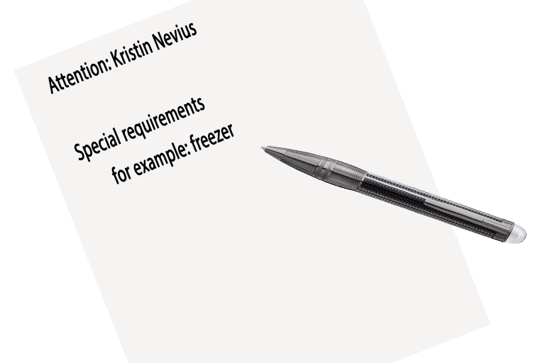

Sample Shipping and/or Handling at HFIR¶
Your samples MUST be confirmed in IPTS before shipping
If you prefer to bring your samples, please go first to the Sample Management Desk (located in the Cold Guide Hall) and work with Kristin and/or Brian to have all your samples labeled with an ITEMS barcode before proceeding to the beamline.